Building a Shiny app - an interactive tutorial.
In summary
Learn to build a Shiny app step by step.
1. Prerequisites
- Install
shinypackage:
|
|
- To ensure successfully installed Shiny:
|
|
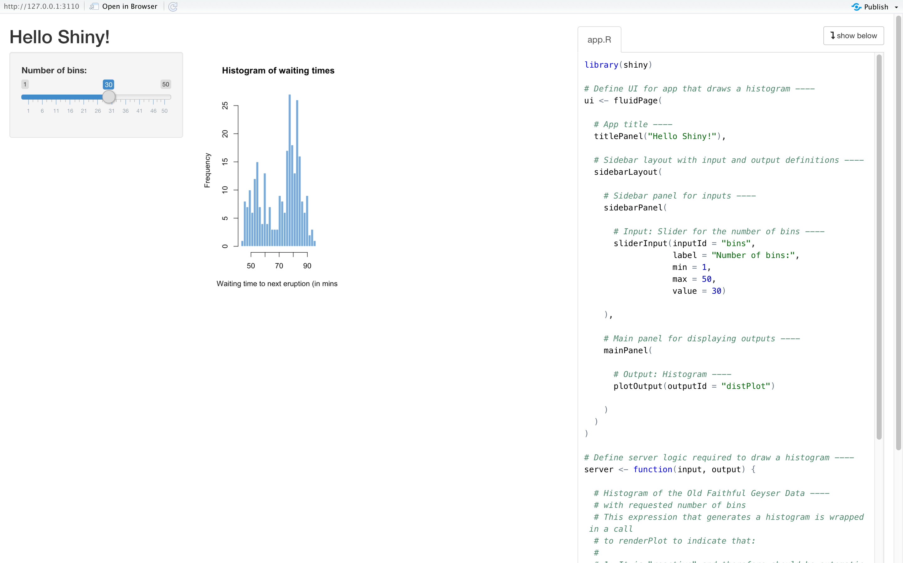
2. Shiny app basics
-
UI: a web page, showing the app to the user.
- creating the layout of the app and telling Shiny exactly where things go.
-
server: a computer, powering the app.
- local laptop.
- server somewhere else.
- for the logic of the app.
- telling the web page what to show when the user interacts with the page.
3. Create an empty Shiny app
- All Shiny apps follow the same template:
|
|
3.1 Alternate way to create a Shiny app
- separate UI file, ui.R.
- server file, server.R.
- Do not need to include the shinyApp(ui = ui, server = server) line.
- Put ui.R and server.R in the same folder.
3.2 Fill out a Shiny app template using RStudio
- RStudio’s menu -> selecting File -> New File -> Shiny Web App
4. Load the dataset
-
Dataset from BC Liquor Store, which has been cleaned up and simplified.
-
Load and verify the dataset.
- Place this line as the second line, just after
library(shiny).
- Place this line as the second line, just after
|
|
5. Bulid the basic UI
- Add elements to the UI
5.1 Add plain text to the UI
- render the text
|
|
5.2 Add formatted text and other HTML elements
- Try the
fluidPage()function.
|
|
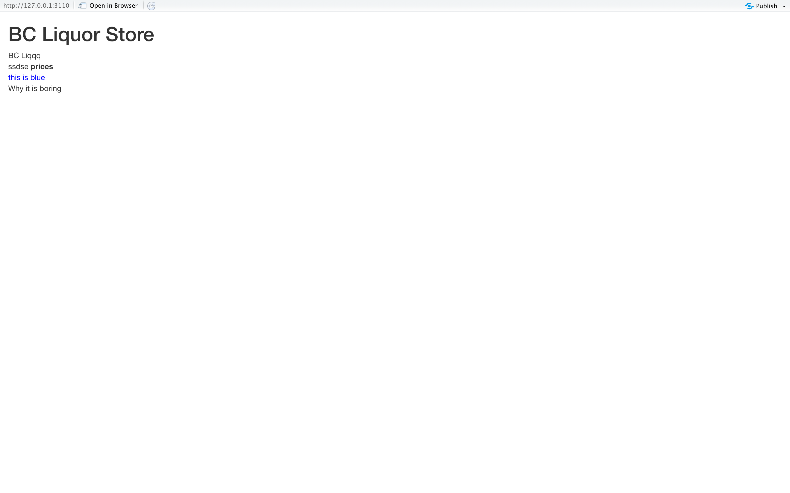
5.3 Add a title
- Use
titlePanel()function to set the “official” title of the web page.
|
|
5.4 Add a layout
-
Use
sidebarLayout()to add a simple structure.- a smaller sidebar and a larger main panel.
-
Add the following code after the
titlePanel()- Remember that all the arguments inside
fluidPage()need to be separated by commas.
- Remember that all the arguments inside
|
|
5.5 All UI functions are simply HTML wrappers
- Look at the output when printing the contents of the ui variable.
|
|
6. Add inputs to the UI
-
Every input must have a unique inputId.
textInput()is used to let the user enter text,numericInput()lets the user select a number,dateInput()is for selecting a date,selectInput()is for creating a select box (aka a dropdown menu).
-
The only way to find out what arguments you can use with a specific input function is to look at its help file.
6.1 Input for price
|
|
- Place the code of
sliderInput()insidesidebarPanel(), replace the text wrote earlier with this input(“our inputs will go here”).
6.2 Input for product type
- Use radio buttons
|
|
- Add this input code inside sidebarPanel(), after the previous input (separate them with a comma).
6.3 Input for country
- Use select box.
|
|
- Continue to add this input code inside sidebarPanel(), after the previous input (separate them with a comma).
7. Add placeholders for outputs
7.1 Output for a plot of the results
|
|
7.2 Output for a table summary of the results
- Create a UI element that will hold a table output:
|
|
8. Checkpoint: what our app looks like after implementing the UI
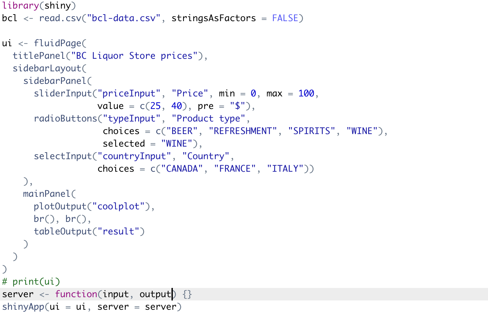
9. Implement server logic to create outputs
-
For listening to changes to the inputs and creating outputs to show in the app.
-
input()- a list you will read values from.
- contain the values of all the different inputs at any given time
-
output()- a list you will write values to.
- where you will save output objects (such as tables and plots) to display in your app.
9.1 Building an output
-
Three rules:
- Save the output object into the output list (remember the app template - every server function has an output argument)
- Build the object with a
render*function, where*is the type of output - Access input values using the input list (every server function has an input argument)
-
Create a plot and send it to the coolplot output.
|
|
-
Reload App and get output.
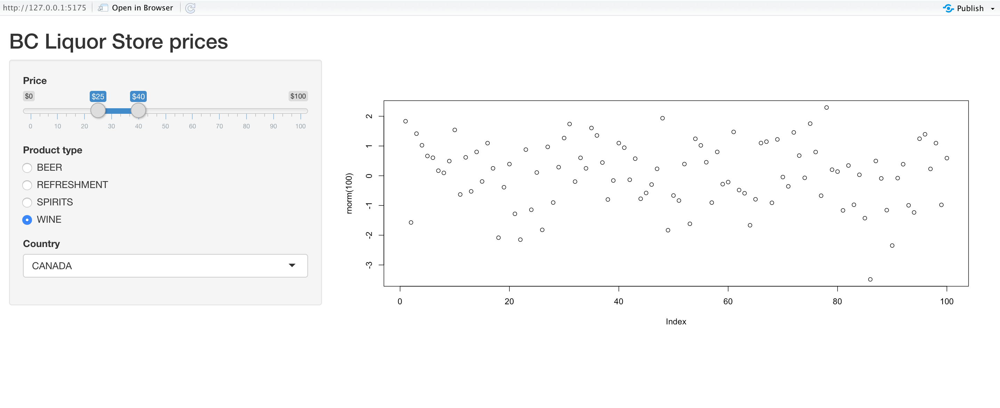
9.2 Making an output react to an input
|
|
-
Reload App and get update.
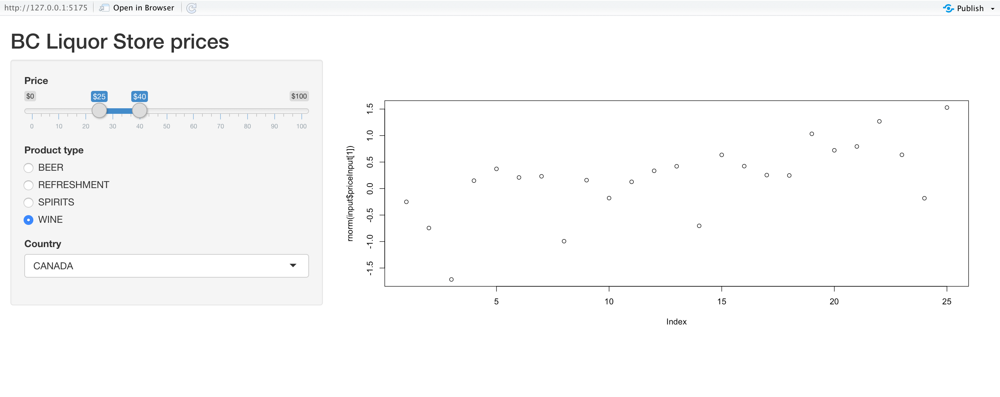
9.3 Building the plot output
-
first, a histogram of the whole data, unfiltered. 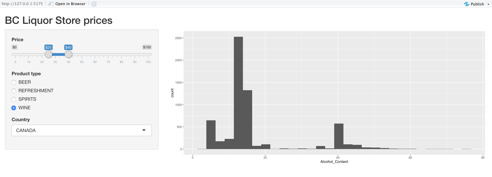
-
Use
dplyr()function to filter the data and do histogram. 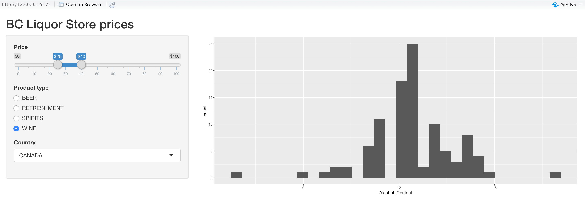 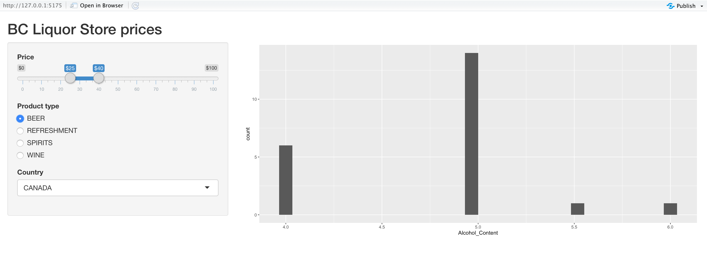 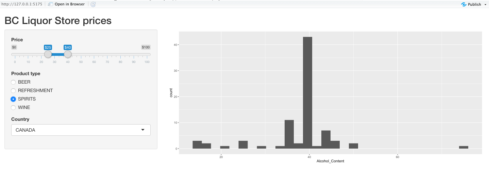 -
At this point, get the code 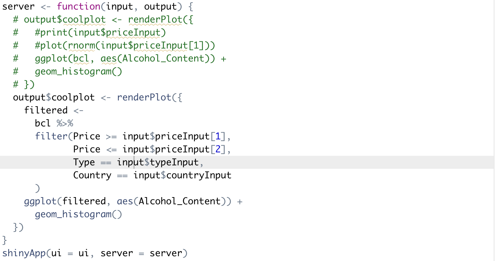
9.4 Building the table output
- Use
renderTable()
10. Reactivity 101
|
|
The above render function accesses two different inputs: input$mycolour and input$mynumber. This means that this code block depends on both of these variables, so whenever either one of the two inputs is updated, the code gets re-executed with the new input values and output$someoutput is updated.
10.1 Creating and accessing reactive variables
observe({})andreactive({})functions in this section were just for learning purposes
10.2 Using reactive variables to reduce code duplication
- As a reminder, Shiny creates a dependency tree with all the reactive expressions to know what value depends on what other value.
11. Using uiOutput() to create UI elements dynamically
-
Any input that you normally create in the UI is created when the app starts, and it cannot be changed.
-
In the server, use
uiOutput()to be able to create an input dynamically.
11.1 Basic example of uiOutput()
|
|
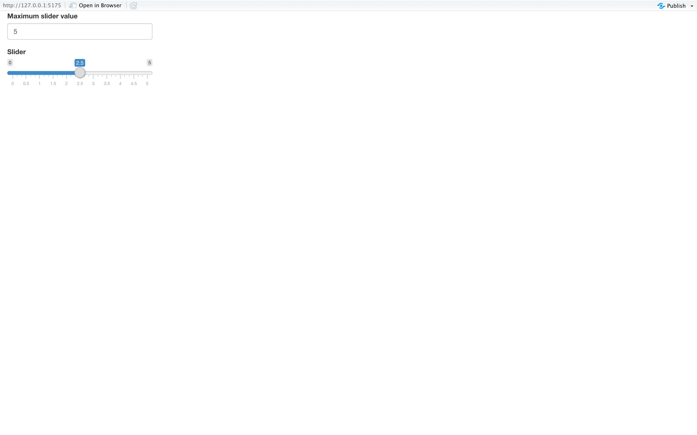
11.2 Use uiOutput() to populate the countries
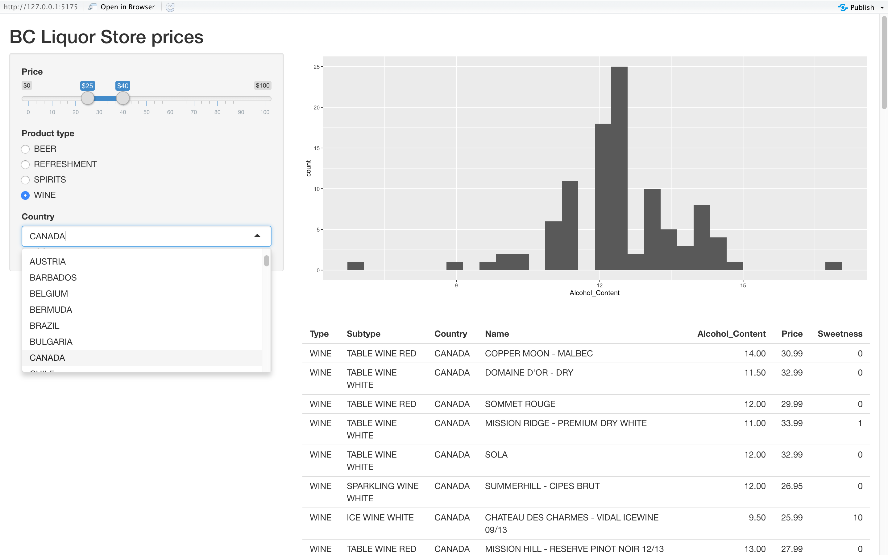
11.3 Errors showing up and quickly disappearing
when the app initializes, filtered is trying to access the country input, but the country input hasn’t been created yet. After Shiny finishes loading fully and the country input is generated, filtered tries accessing it again, this time it’s successful, and the error goes away.
11.4 Use uiOutput() to add subtypes
- In the ui, add code:
|
|
- In the server, modify
reactive({})by adding code:
|
|
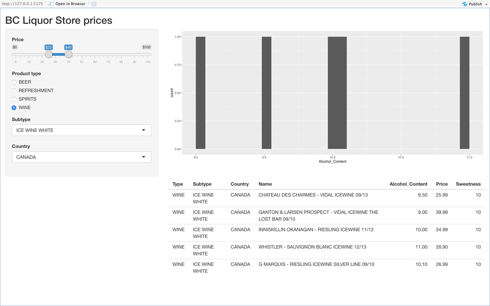
12. Final Shiny app code
- see code.
13. Share apps with the world
13.1 Host on shinyapps.io
13.2 Host on a Shiny Server
-
private Shiny serverc: DigitalOcean(DO)
-
DO droplet. droplet = your machine in the cloud
14. More Shiny features to check out
14.1 Shiny in Rmarkdown
|
|
-
Click
Knitbutton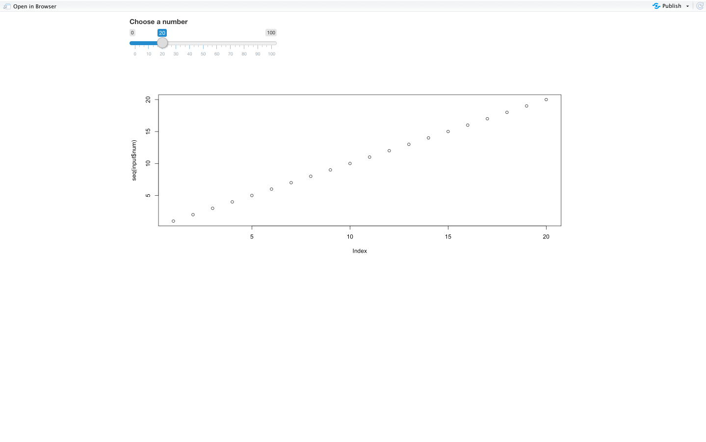
14.2 Use conditionalPanel() to conditionally show UI elements
|
|
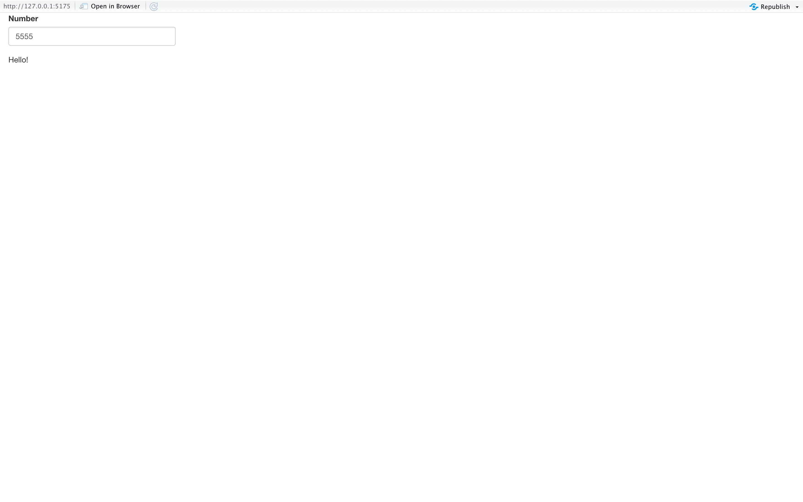
14.3 Use navbarPage() or tabsetPanel() to have multiple tabs in the UI
|
|
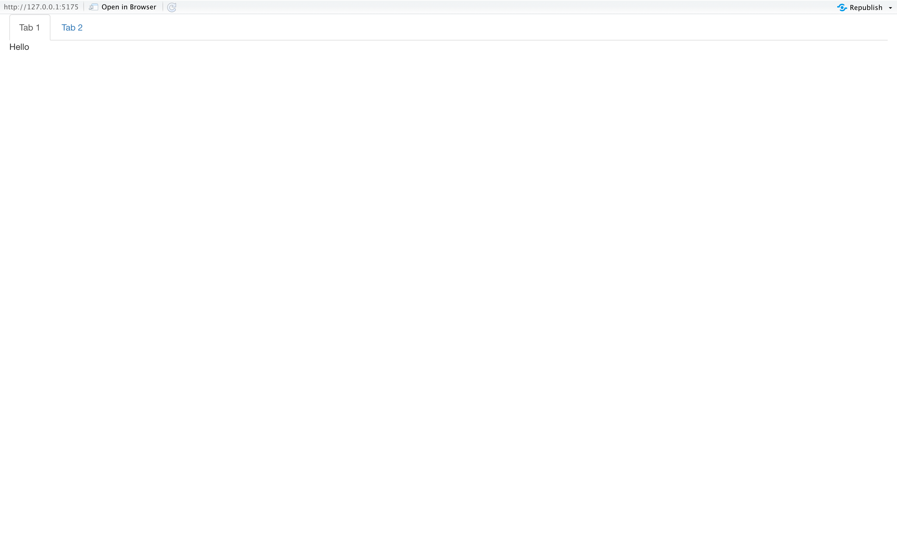
14.4 Use DT for beautiful, interactive tables
- In the
DTpackage. - Use
DT::dataTableOutput()+DT::renderDataTable()to replacetableOutput()+renderTable()
14.5 Use isolate() function to remove a dependency on a reactive variable
- To suppress some of reactive variables
- Cause a reactive variable to not be a dependency.
- With
isolate()to wrap the code
14.6 Use update*Input() functions to update input values programmatically
|
|
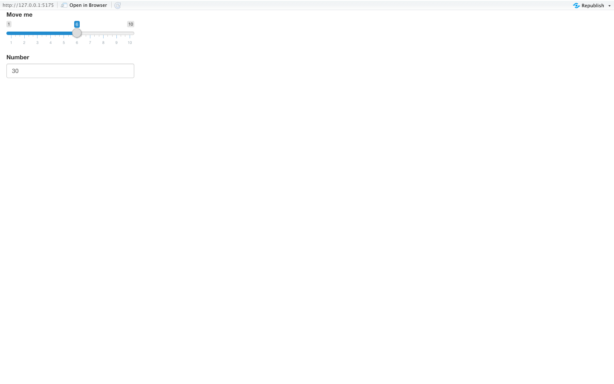
14.7 Scoping rules in Shiny apps
14.8 Use global.R to define objects available to both ui.R and server.R
14.9 Add images
- Place an image under the “www/” folder
- Use the UI function
img(src = "image.png")
14.10 Add JavaScript/CSS
|
|
15. Awesome add-on packages to Shiny
- shinyjs: Easily improve the user interaction and user experience in the Shiny apps in seconds.
- shinythemes: Easily alter app appearance.
- leaflet: Add interactive maps to apps.
- ggvis: Similar to ggplot2, but the plots are focused on being web-based and are more interactive.
- shinydashboard: Giving tools to create visual “dashboards”.